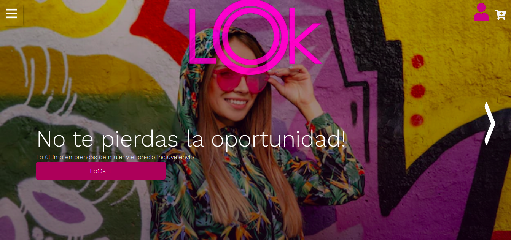
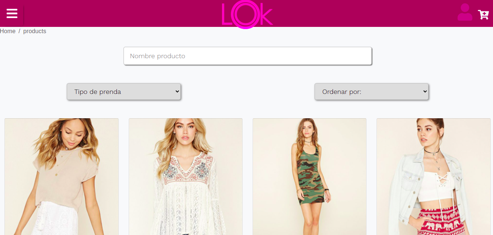

e-Commerce "lOk App"
 Es una página web para comercio electrónico de una línea de moda de un diseñador colombiano que maneja una tendencia de ropa de estilo urbano.La aplicación fue desarrollada con React JS por el lado del cliente y Node JS (Webpack) por el lado del servidor y se empleó una base de datos relacional en sequelize.
Esta app fué el proyecto final que presentó un equipo de 8 alumnos del Bootcamp de Henry, para terminar la cursada como Fullstack Developers. El resultado es evidencia de los conocimientos técnicos que nos han transmitido, pero en especial, un proyecto para aprender a trabajar en equipo por medio de herramientas de colaboración y comunicación como Github, Trello y Discord.
El objetivo era realizar un e-commerce con los roles “Invitado, Usuario y Administrador”, para testear todas las funcionalidades, en la presente versión deployada es posible registrarse y quedará automáticamente creado como administrador.